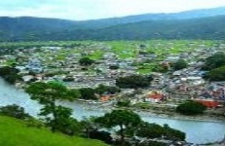
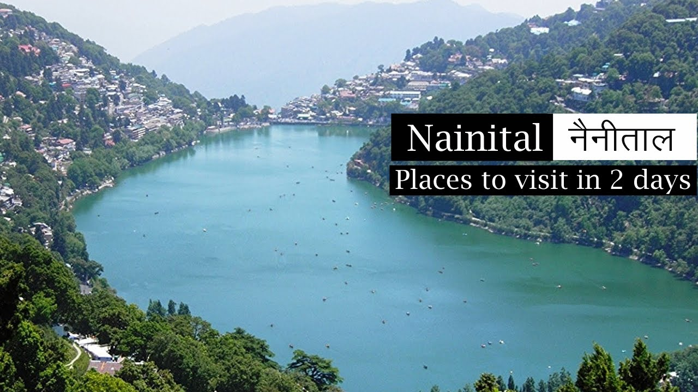
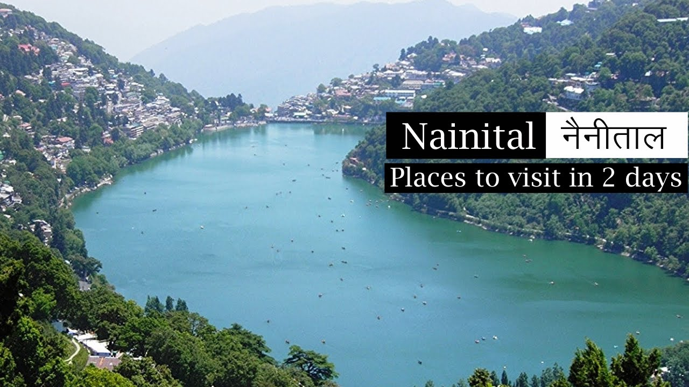

About City
Almora
Almora was founded in 1568 by Kalyan Chand during the rule of the Chand dynasty. Prior to that the region was under the control of Katyuri King Bhaichaldeo who donated a part of Almora to Sri Chand Tiwari. According to local tradition, the earliest inhabitants in Almora were Tewaris who were required to supply Sorrel daily for cleansing the vessels of sun temple at Katarmal.Ancient lore mentioned in Vishnu Purana and Mahabharata present primordial accounts of human settlements in the city.The Sakas, the Nagas, the Kiratas, the Khasas and the Hunas are credited to be the most ancient tribes.The Kauravas and Pandavas of the Hastinapur royal family were the next important princes from the plains who are said to have affected the conquest of these parts.After the Mahabharata war the district seems to have remained for some time under the sway of the kings of Hastinapur whose authority was never more than nominal. The actual rulers were the local chiefs of whom the Kulindas (or Kunindas) were probably strong in the southern and western part of the city. The Khasas were another ancient people who belonged to an early Aryan stock and were widely scattered in those times. They gave this region the name Khasadesha or KhasamandalaReadmore....
Ranikhet
Ranikhet, which means Queen's Meadow in Kumaoni, gets its name from a local legend, which states that it was here, that Raja Sudhardev , Vansh Pratap , Mukul Jalal won the heart of his queen, Rani Padmini, who subsequently chose the area for her residence, giving it the name, Ranikhet,[6] though no palace exists in the area. Ranikhet had been under Nepalese rule after the Nepalese invasion of Kumaon and Doti in 1790, and the Kumaonis won it under the leadership of their able General Kashi Nath Adhikari – after whom the small town of Kashipur was named (which at one point of time was the gateway to the hills and is now an educational and institutional hub) – with the help of British at around 1816 and is a part of India now.Readmore....
Bageshwar
The city and Bagnath Temple find mention in the Manaskhand of Shiva Purana, where it is written that the temple and its surrounding city was built by Chandeesh, a servant of the Hindu deity Shiva. According to another Hindu Legend, Sage Markandeya worshipped Lord Shiva here. Lord Shiva blessed sage Markandeya by visiting here in the form of a Tiger. Bageshwar has historically been a part of Kumaon Kingdom. Bageshwar was located adjacent to Kartikeypura, the then capital of Katyuri Kings that ruled over Kumaon in the 7th century. After death of Birdeo the last king of united katyuri kingdom. the kingdom disintegrated in the 13th century giving rise to 8 different princely states. Bageshwar region remained under the rule of Baijnath Katyurs descendants of Katyuri kings, till 1565 until king Balo Kalyan Chand of Almora annexed the region to Kumaon In the 10th century, the Chand dynasty was established by Som Chand. He displaced the Katyuri Kings, called his state Kurmanchal and established its capital in Champawat in Kali Kumaon. In Kalyan Chand established a permanent capital at Khagmara and called it AlmoraReadmore....
Nainital
 

The city of Nainital covers a total area of 11.73 km2 (4.53 sq mi), and is located at 29.38°N 79.45°E,[7] at an average elevation of 2,084 metres (6,837 ft) above sea level. The slopes of the nearby mountains are most populated, with an altitude ranging from 1,940–2,100 m (6,360–6,890 ft). The highest point nearby is the Naina Peak, with an height of 2,619 m (8,593 ft). The city is located in the Kumaon foothills of the outer Himalayas at a distance of 285 km (177 mi) from the state capital Dehradun and 345 km (214 mi) from New Delhi, the capital of India. Scenic view of the Nainital from Tallital, the lower end of the lake. The city is set in a valley around the Nainital Lake - an eye-shaped lake, which is located at an altitude of 1,940 m (6,350 ft) from sea level. The lake is 1,433 m (1,567 yd) long and 463 m (506 yd) wide, and is approximately two miles in circumference.[8] The bed of the lake is at a depth of 85 m (93 yd) near Pashandevi, the deepest point of the lake. The lake is deduced to have been formed tectonically. Balia Nala, which is the main stream feeding the lake is along a fault line and the subsequent streams align parallel to major joints and faults. 26 major drains feed the lake including the 3 perennial drains.Readmore....
Bhimtal
Bhimtal is an ancient place named after Bhima of Mahabharata. Bhimeshwara Mahadev Temple, an old Shiva temple in the bank of Bhimtal lake, is believed to have been built when Bhima visited the place during the banishment (vanvas) period of Pandavas. The present temple was built in the 17th century, by Baz Bahadur (1638–78 AD), a King of the Chand dynasty, and the Raja of Kumaon.[1]Archived 2008-06-18 at the Wayback Machine British Library.6). Bhimtal is older than nearby Nainital as the city of Nainital is just 150–160 years old but Bhimtal is older than Nainital and Haldwani and was a stoppage onrute to old pedesterial road is still in use here and this road connects nearby Kathgodam to all Kumaon region and even to Nepal and Tibet. It might have been the part of the famous ancient silk route.Readmore....
Copyright © 2021. All rights reserved with Arjun Negi